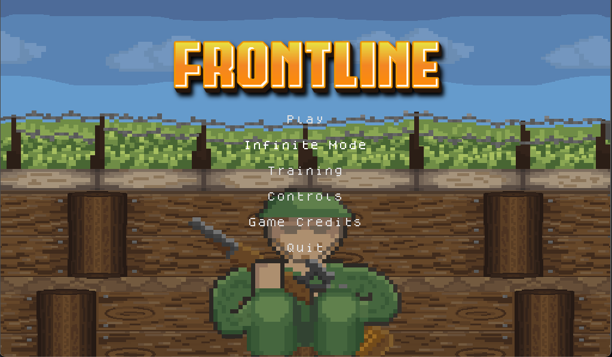

¡Hi! I'm Carlos Delgado Contreras, a Mexican programmer deeply passionate about video game development. Since I was young, videogames have been present in my life. In Highscool I discover my enthusiams and interest in programming. Due to this I enrolled myself in the career of Engeneering in Computational Technologies in the univeristy of Tec De Monterrey. In this Webpage you will be able to find and discover my game projects, updates in current games, dev logs, Game Jams and the Students groupe I belong to. ¡Hope you like it and thank you :) !
My Portafolio
Frontline
Genre: Tower Defense
My Rol: Solo Developer
Dev State: Finished and Published

Main Gameplay of Frontline
Frontline, is a Top-Down Pixel Art videogame setted in the 2nd world war where the player plays the role of a british soldier entreched in the trench war's. Defend the Ally trench from the Axis enemies in this action-packed tower-defense game that combines presicion, timing and quick reflexes.
A Momery of Masks is a Murder Mystery game where the player has to uncover the riddle behind the curse cast upon a royal party. Doomed to use unremovable masks, the player has to deduce his opponent mask for using the correct one. Interrgoate the party members, use the correct masks, win the clues and uncover who is behinf the Red Mask
Project Amaterasu is an incomig 2D Pixel Art Rogue-like shooter for PC and consoles. This proyect is currently developed by Outer Games Studio and has a release date for June 2026.